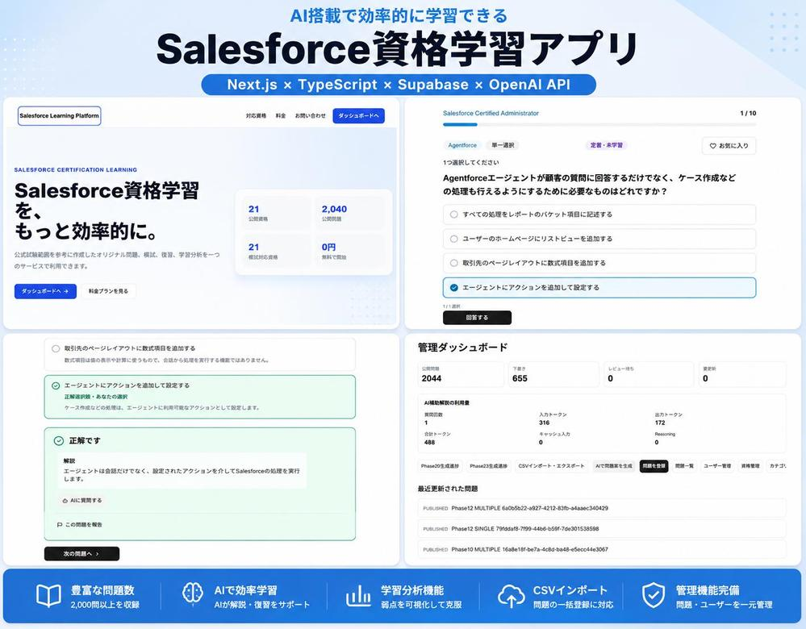

Salesforce Learning Platform
Salesforce資格学習向けWebアプリ。AIによる問題生成・解説、模試機能などを実装し、現在も機能追加・問題コンテンツの拡充を継続中。
- 主な機能
- Google OAuthログイン、資格別の問題演習、カテゴリ別学習、AIによる問題・解説生成、AIチューター、模試モード、お気に入り・誤答復習、学習履歴・統計表示、管理画面（問題・資格・カテゴリ管理）、CSVによる問題一括登録、レスポンシブ対応
- 対応資格
- Administrator、Platform App Builder、Platform Developer I
- 担当範囲
- 要件定義、画面設計、DB設計、API設計、UI実装、バックエンド実装、DB構築、認証機能、AI機能実装、テスト、Vercelへのデプロイ